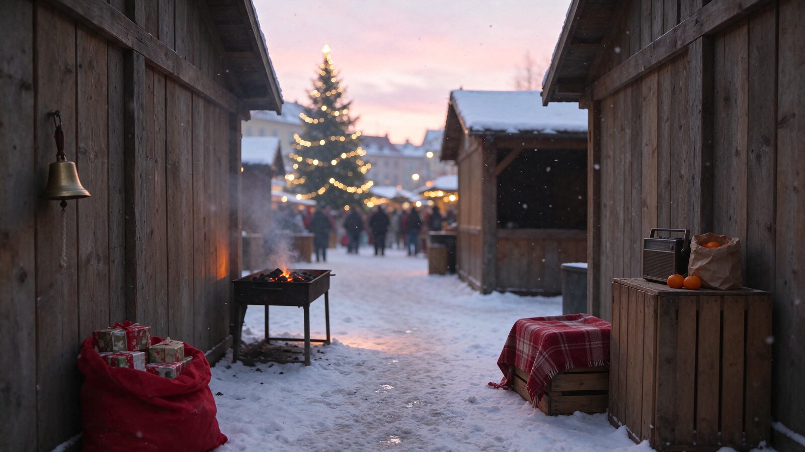

← Серия · ЭПИЗОД 02 · РОЖДЕСТВЕНСКАЯ ЯРМАРКА · 50 с
Mikołaj
Рождественская ярмарка. За домиками Миколай устроил перерыв: борода спущена, в руке колбаска, Pepsi нет. Даже Миколай не выше закона.
Коротко
Задача
Написать и снять собственный эпизод сверх четырёх историй брифа — такой, что работает на Рождество и в любой стране.
Решение
Миколай — последний, кого можно заподозрить. Пойманный на перерыве с колбаской и без Pepsi, он становится самым уважаемым нарушителем патруля — а патрулю нужно спасти Рождество на глазах у ребёнка.
Результат
Готовый 50-секундный фильм на польском с переводом субтитрами, мастера для ТВ и веба от 4K ProRes до H.264.
Идея
Бриф клиента предлагал четыре истории: парковка, доставка, кино, барбекю. Рождественскому сезону серии нужна была ещё одна — поэтому этот сценарий написан с нуля, вне брифа.
Даже Миколай не выше закона.
С ним пришли два правила. Только на улице: ярмарка, а толпа — лишь фоном. И ничего, что выдаёт место, — ни узнаваемых зданий, ни вывесок, ни надписей, — чтобы фильм работал в любой стране и на любом языке.
Режиссёрское решение
За ярмарочными домиками Миколай тайком отдыхает: борода спущена, колбаска в руке, Pepsi нет. Эльфийка стучит по часам, мальчик замечает Миколая без бороды — и Pepsi Patrol успевает вовремя.
Одна камера наблюдения над служебным двором держит географию: фургон, проход, ярмарка, ёлка. Всё между ними — ручная камера невидимого любителя, никогда не дальше нескольких шагов от Миколая. План локации сверху зафиксировал каждую позицию ещё до генерации.
Сонный перерыв → напоминание эльфийки → реплика мальчика обрывает музыку на ударе барабана → Дарек врывается и закрывает обзор → Ага торжественно объявляет обвинение → самый длинный план принадлежит банке → музыка возвращается, когда Миколай поднимается → снова в роли перед мальчиком → финал с камеры наблюдения под титры.
Миколай усталый, человечный и немного виноватый — не талисман. Эльфийка — его строгая помреж. Мальчик — единственный свидетель, который имеет значение. Дарек защищает чудо всем телом, Ага — закон.
Кастинг и мир
Мир зафиксировали ещё до движения: Миколай — видеокарточка, эльфийка, мальчик и мама — листы персонажей, пустая ярмарка — подложки для каждой точки камеры. Патруль пришёл прямо из серии.
Фотопробы





Видеопробы
Каждый новый персонаж получил видеопробу ещё до генерации первого плана. Переключите на «В фильме», чтобы увидеть и услышать того же человека в фильме; динамик включает звук, клик — увеличивает.
Поворот, усталость, «хо-хо-хо»: возраст, вес и смех проверены до первого плана.
Выглядывает, стучит по часам, «ещё пять минут» — вся её роль в одной пробе.
Походка, рука в руке, взмах: воспринимается ли трёхлетний малыш живым с первого взгляда?
Производство
Собственный сценарий, снятый по правилам, которым серия уже научилась, — и с двумя новыми уроками: глубина мизансцены и голоса.
- 01
Сценарий и план
Собственный сценарий, шот-лист на 50 секунд и план локации сверху: каждый персонаж, камера и реквизит расставлены в метрах.
- 02
Референсы
Видеокарточка Миколая, листы эльфийки, мальчика и мамы; пустые подложки локации без единого человека.
- 03
Три прохода
Seedance 2.5 Multishot в Magnific: фильм сгенерирован тремя непрерывными проходами — 0–12 с, 12–23 с, 23–47 с, — потом смонтирован.
- 04
Точечные правки
Планы исправлены локально: моргание Миколая, новый план камеры наблюдения, бейдж Аги — трекингом в 4K, голая рука — покадрово.
- 05
Голоса
Польские реплики переозвучены по замечаниям носителя языка насчёт ударений; мальчику сделан липсинк; реплика Миколая отдана более старшему и грубому голосу.
- 06
Апскейл и цвет
Topaz Proteus ×2 до 4K, дальше покадровая коррекция скриптом: баланс по снегу, дефекты камеры, камера наблюдения 12 кадр/с с собственными данными на экране, анимированные титры.
- 07
Звук
AI-джаз, который обрывается на ударе барабана и возвращается, когда Миколай поднимается; колокольчик в самом конце. −23 LUFS ТВ, −14 LUFS веб.
Проблемы и решения
Модель не держала глубину мизансцены из текста: кто где стоит и на каком расстоянии.
РЕШЕНИЕБрать игру из удачного дубля, вырезать фигуры по разнице с пустой подложкой и расставлять вручную — камера неподвижна.
Сдвиг тона клонированного голоса не делал Миколая старше.
РЕШЕНИЕДругой голос, подобранный по возрасту и характеру: грубый, грудной, 55–60 лет, ровно и строго.
Перегенерация мелкой фигуры с карточкой персонажа могла заменить всю сцену.
РЕШЕНИЕМелкие дефекты исправлены локально, покадрово, — перчатка, бейдж, рука.
Синтетический закадровый перевод терял слова и ударения в коротких репликах.
РЕШЕНИЕВместо него — субтитры: чем короче реплики, тем лучше они работают и тем честнее ощущается документальность.
Изображение и звук
Зимние сумерки: розовое небо, тёплые огни домиков, холодный снег. Цвет — по планам с балансом белого по снегу, контраст наполовину сведён к общему виду, насыщенность −8 %. Камера наблюдения — холодный цвет, 12 кадр/с, собственные данные на экране.
Сначала — атмосфера ярмарки и потрескивание гриля. AI-джаз идёт под перерыв, обрывается на ударе барабана, когда говорит мальчик, и возвращается, когда Миколай поднимается. Фильм закрывает колокольчик.
Технический паспорт
Титры
- Режиссёр
- Андрей ТимощукРежиссёр · AI-продакшн · монтаж · цвет · звук
- КЛИЕНТ
- Pepsi MAX Польша
- По мотивам
- британской кампании Pepsi MAX «SodaStop»
- Инструменты
- Magnific (Seedance 2.5, Seedream, Nano Banana, голоса ElevenLabs) · Topaz · After Effects · Python / ffmpeg · Claude